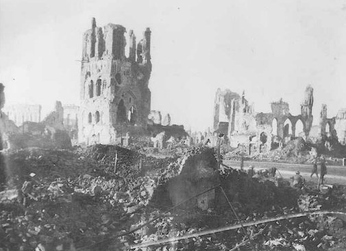
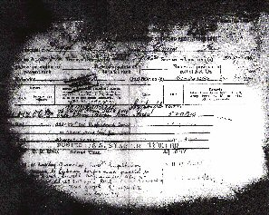

Ypres - Autumn 1917
(text in italics is extracted from the 9th South Staffordshires War Diary)

8th August 1916 - to Ypres . Return to the Somme in September - Martinpuich and Le Sars . Withdrawn back to Ypres in October.
Following duty on the Somme Front, the Division was sent to the Ypres salient during the first two months of 1917 being posted close to Zillebeke. In June 1917, the 23rd was part of the spear head attack at Messines. They took Hill 60, Caterpillar, Battle Wood (Pillars of Fire) from the German 204th Regiment on the 7th of June and held it. This area was at the extreme north of the attack line.
19 August 1917 - Edewaarihoek working on the roads .
On 21st August 1917 Tom was briefly attached to 23rd Division Reinforcement Camp. This may have been due to illness or injury, but after 14 days he was posted back to the 9th Battalion.
26th August 1917 - Paschendaele , in the line
30th August 1917 - Glencourse Wood
20th September 1917 - Menin Road and Tower Hamlets
23rd September 1917 - relieved by 33 Divn.
30th September 1917 - in the line north of Menin Road
1st October 1917 - in line
9th October 1917 - relieved by the 7th Divn
Following their involvement in the Third Battle of Ypres the 9th South Staffs received orders to accompany the 23rd Division to Italy but Tom was not to go with them. He was instead transferred to the 1/5 South Staffordshires on 13 October 1917 and therefore remained on the Western Front.
